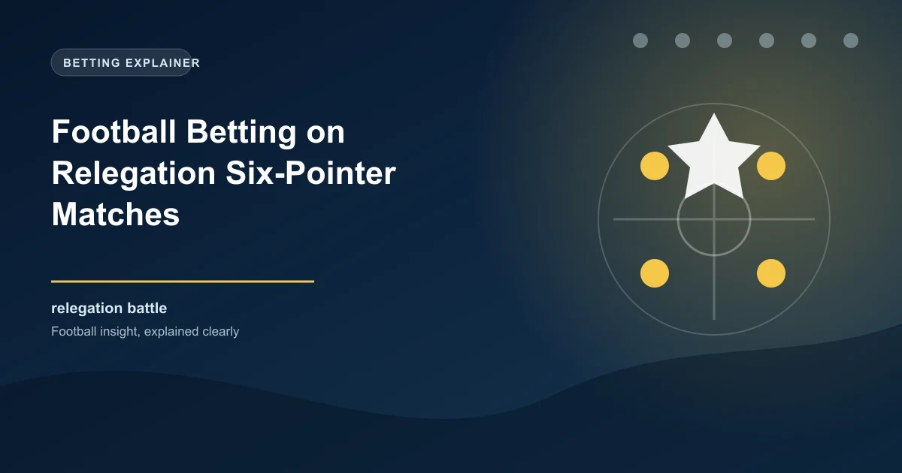

Relegation six-pointer matches are among the most dramatic and unpredictable fixtures in any football season. When two teams sitting near the bottom of the table face each other, the stakes are astronomically high because a single result can swing a team's survival hopes in either direction. For bettors, these matches represent a unique opportunity to find value if you understand the underlying dynamics that separate six-pointers from standard league fixtures.
In this comprehensive guide, we will break down exactly what makes relegation six-pointers statistically different from other matches, how to identify value when the market may be mispricing these games, and what practical strategies you can apply to improve your long-term betting returns on survival fight fixtures.
A relegation six-pointer is a match between two teams who are both in or near the relegation zone. The term comes from the idea that a win is worth six points: three points gained for the winner and three points denied to the closest rival. While this is a colloquial term rather than a mathematical certainty, the psychological weight of these fixtures genuinely changes how both teams approach the match.
Unlike matches between a top-six side and a bottom-half team, where the quality gap often dictates the outcome, six-pointers feature two teams of broadly similar ability. This creates a fundamentally different betting landscape. The favorite in a standard match is usually priced based on quality superiority, but in a six-pointer, the favorite is priced based on marginal advantages such as home form, recent momentum, or squad fitness.
Looking at historical data across Europe's top five leagues over the past decade, relegation six-pointers display several notable statistical trends. First, the draw rate in six-pointers is significantly higher than the league average. While the typical Premier League match produces a draw roughly 25-27% of the time, six-pointers see that figure climb to around 30-33%. This happens because both teams often adopt cautiously aggressive approaches, leading to tense, evenly contested matches.
Second, the total goals market in six-pointers tends to skew lower. When both teams are fighting for survival, defensive solidity often takes priority over attacking flair. Teams that would normally play expansive football suddenly become pragmatic, focusing on not conceding rather than scoring freely. The under 2.5 goals market has historically performed well in six-pointers, hitting at a rate of approximately 55-60% compared to the league average of around 48-50%.
Third, home advantage plays a disproportionate role in six-pointers. The home crowd becomes an extra player when the stakes are this high. Teams fighting relegation at home win six-pointers at a notably higher rate than their overall home win percentage suggests, largely because the emotional energy of the crowd amplifies the players' determination.
Motivation is the single most important variable in relegation six-pointers, and it is also the hardest to quantify. Two teams can be separated by just one or two points in the table, but their mental states can be worlds apart. A team on a three-game winning streak arriving at a six-pointer carries momentum and belief that transcends their league position. A team that has lost five of its last six arrives already mentally defeated, regardless of what the table says.
The timing of the six-pointer within the season also matters enormously. Early-season six-pointers (September to November) tend to be more open and goal-heavy because teams have not yet adopted survival-mode tactics. Mid-season six-pointers (December to February) are often the tightest and lowest-scoring because the fear of relegation becomes concrete. Late-season six-pointers (March to May) can swing wildly depending on whether one team still has something to play for or has effectively conceded the battle.
Bettors should pay close attention to the psychological state of each squad. Injuries to key players, managerial changes, boardroom instability, and fan protests all affect motivation in ways that raw statistics cannot capture. A team whose fans have turned against the board may play with a siege mentality that lifts performance, or they may collapse under the pressure of a toxic atmosphere.
Desperation in football is a double-edged sword. On one hand, a desperate team will run harder, tackle more aggressively, and show a level of commitment that their season-long statistics would not predict. On the other hand, desperation often leads to poor decision-making. Desperate teams commit more fouls, receive more yellow and red cards, and make tactical errors that more composed opponents exploit.
From a betting perspective, this creates specific opportunities. The cards market is often valuable in six-pointers because the intensity of the contest leads to a higher-than-average number of bookings. The over 3.5 cards market, in particular, tends to perform well in survival fights. Similarly, the over 10.5 corners market can offer value because desperate teams often resort to crosses and set-pieces as they chase the game.
Desperation also affects how teams approach the final fifteen minutes of a match. When a six-pointer is level approaching the 75th minute, the team that is more desperate for the win will push forward aggressively. This creates late goal opportunities that the in-play betting market often underestimates. If you can identify which team is more desperate to win, backing goals in the final quarter of the match can be profitable.
Managers of relegation-threatened teams often make significant tactical adjustments for six-pointers. The most common shift is toward a more defensive setup. Teams that normally play 4-3-3 may switch to 5-4-1 or 5-3-2 for these fixtures, prioritizing defensive solidity over attacking output. This tactical conservatism is the primary reason why under 2.5 goals performs well in six-pointers.
However, some managers take the opposite approach, deciding that a six-pointer is a must-win rather than a must-not-lose. These teams may deploy an unusually attacking lineup, pushing fullbacks high, playing with two strikers, or pressing aggressively from the front. When this happens, the match can become surprisingly open and high-scoring despite the underlying tension.
The key for bettors is to study the manager's tendencies. Some managers are natural pragmatists who will always set up conservatively in big matches. Others are risk-takers who believe the best form of defense is attack. Understanding which type of manager you are dealing with helps predict the tactical approach and, consequently, the likely match profile.
Before betting on a six-pointer, research the following:
The most important skill in betting on six-pointers is value identification. Because these matches attract significant public attention, the market can become distorted by recency bias and emotional narratives. A team that just won 4-0 may be overvalued in their next six-pointer, while a team that lost 3-0 may be undervalued.
Look for situations where the market has overreacted to recent results. A team that lost 3-0 to a top-four side may be priced as underdogs in their next six-pointer, even though the defeat is not representative of their ability against similarly-ranked opponents. Conversely, a team that won 3-0 against a fellow struggler may see their odds shorten beyond what their overall form justifies.
The draw market is frequently the best source of value in six-pointers. Because the public generally prefers backing a team to win, the draw is often slightly overlooked by bookmakers. When two evenly matched, defensively solid teams meet in a six-pointer, the draw should be priced at around 3.00-3.20, but it often drifts to 3.30-3.50 because bettors prefer the excitement of backing a winner.
Here are five practical strategies that have shown long-term profitability when applied correctly to relegation six-pointer matches:
Betting on six-pointers requires discipline. The biggest mistake bettors make is overcommitting to these matches because the drama and narrative draw them in. Not every six-pointer is a betting opportunity. Some matches are genuinely too unpredictable to offer value, and the disciplined approach is to skip those fixtures entirely.
Another common error is ignoring the broader context. A six-pointer does not exist in isolation. If one team has a favorable run of fixtures after the six-pointer, they may be more willing to accept a draw, knowing they can pick up points elsewhere. A team facing a brutal run of fixtures ahead may view the six-pointer as a must-win, changing their approach fundamentally.
Finally, do not chase your losses on six-pointers. These matches are volatile, and a losing bet does not mean your analysis was wrong. Sometimes the better team loses because of a red card, a deflected goal, or a goalkeeper error. Stick to your process and trust the long-term edge.
Join WinFulltime for data-driven predictions and analysis across all major leagues.
Get Today's Predictions Win
Win